About Munnar
Munnar - Kashmir Of South India
Munnar, a mesmerizing hill station located in the Idukki district of Kerala, derives its name from the three rivers that merge here. Adorned with lofty mountains amidst swirls of pale mists and low flying clouds; rich green slopes and velvety carpets of tea and spice plantations; hints of pinks, yellows, and sparkling blues dotting the landscapes; pine and oak trees lightly swaying to the cool mountain breeze filled with the refreshing aroma of tea—Munnar may just be the reason Kerala is often referred to as ‘God’s own country’. With a plethora of Munnar tourist places to visit, this destination sweeps one off their feet with utter delight.
Best Time To Visit Munnar
Munnar is a destination that has something for everyone, in every season. This might be a town that can be visited all year, but it still has some particular days that one can visit it. Make sure you pack your clothes as per the season you decide to visit.
The Winter Chill: December to February (ideal for honeymooners and adventure enthusiasts)
The Summer Breeze and Lush Tea Gardens: March to May
Popular Places In Munnar
There is an enthralling assortment of things to do in Munnar for visitors, like plantation visits, trekking, camping, boating, parasailing, bird watching, wildlife spotting, rock climbing, fishing, and photography, which is why visiting all tourist places in Munnar makes up for an awesome getaway.

ELEPHANT LAKE
The Elephant Lake is a serene lake surrounded by lush green carpets of tea plantations in every direction the eye can see. Elephants come down to the lake in order to drink water and take a bath, which is a fascination to watch for the tourists visiting the lake.
ANAMUDI PEAK
If one wishes to witness the beauty of the rolling hills and valleys with shimmering blue rivers weaving through them, the expanse of tea and spice plantations, and the wildlife dotted about here and there in Eravikulam National Park, they should trek to Anamudi Peak. Located inside the park itself, the peak is among Munnar’s best tourist attractions.
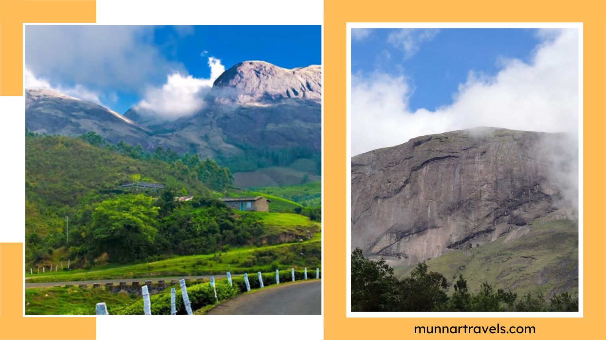
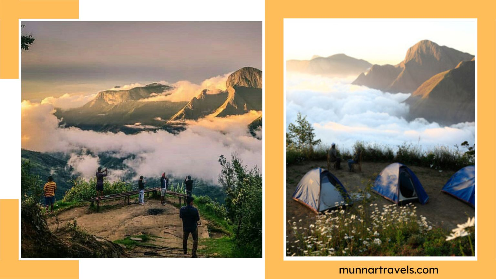
TOP STATION
Top Station, named after the railway station located on a massive height in Kundala Valley, offers mesmerising vistas of the town below. The cotton clouds enveloping the hills and valleys, the soft, bluish look of the destination owing to the presence of the rare Neelakurinji flowers, and the panoramic views of the Western Ghats together make it a must on the list of Munnar’s tourist places one needs to explore.
ERAVIKULAM NATIONAL PARK
Eravikulam (Rajamalai) National Park has the largest population of the endangered Nilgiri Tahr and is home to 26 species of mammals. The park is also famous for providing magnificent views of the Western Ghats. The park’s continuous efforts towards the protection and safety of endangered animals make it one of the best wildlife sanctuaries in India.
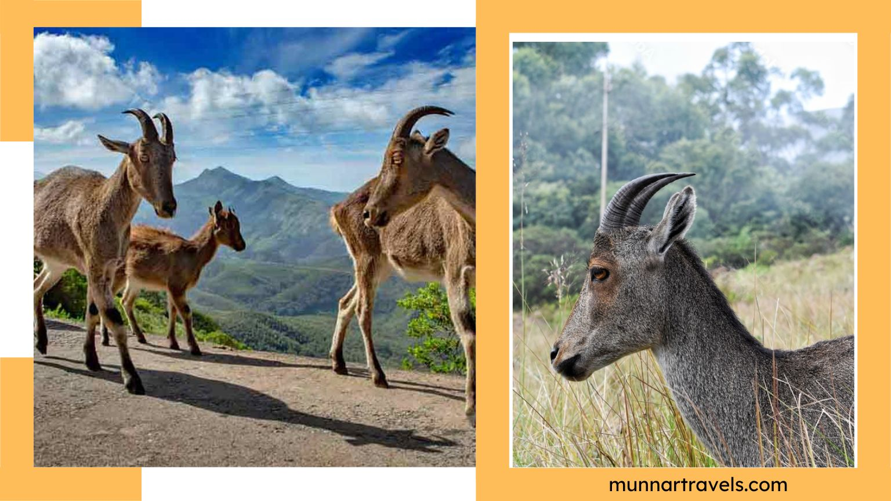
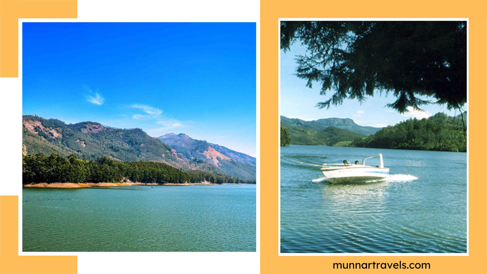
MATTUPETTY LAKE & DAM
Mattupetty has a few places of interest for tourists, out of which the lake and the dam built over it attract the majority of them. The lake, surrounding hills, and nearby tea plantations offer a splendid view to visitors, and the presence of different bird species at the lake never fails to enchant bird watchers, owing to which it is among the prominent places to visit in Munnar.
ROSE GARDEN
A famous spot among nature lovers and couples, the Rose Garden near Mattupetty Lake is a sight for sore eyes. Home to a sea of almost every colour of rose known on the planet and a vast variety of bird species, this gorgeous garden is frequented by nature aficionados, rose lovers, and bird watchers.
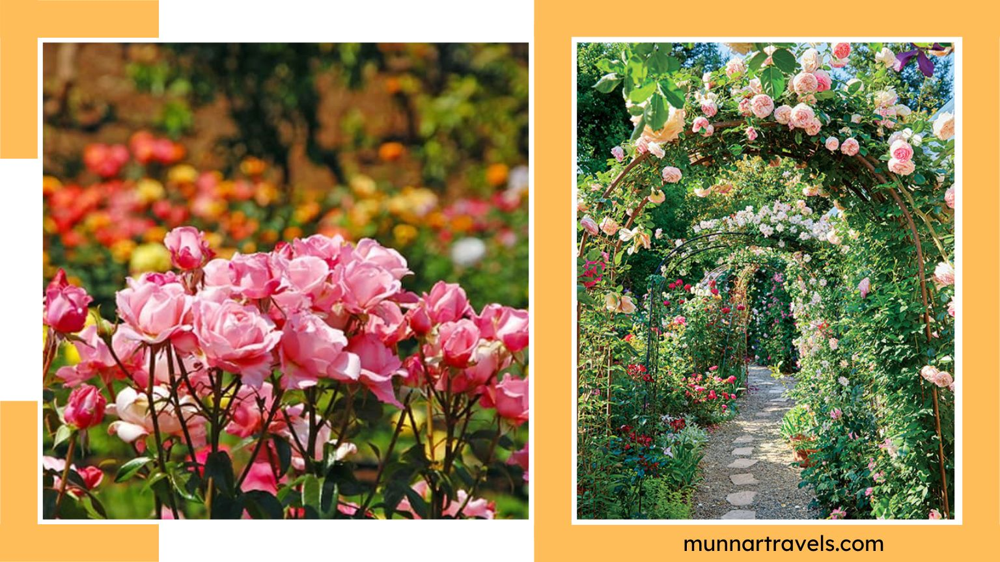
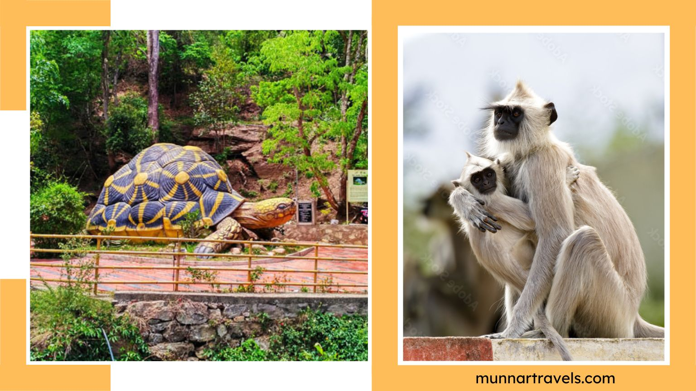
CHINNAR WILDLIFE SANCTUARY
Your Alleppey tour will be more pleasant if you visit Triveni Floating Market. It is the best place to visit in Alleppey for a day trip. Shopping in this amazing floating market is an experience of a lifetime. You will get to buy things on a boat like fruits, toiletries, stationery, etc. It is a state-owned market. The most interesting fact about this place is that such kinds of markets used to exist when there were no other means of transport. People used to travel on boats. The existence of this kind of market in Alleppey makes it the best place to explore in Kerala. It supplies essential items like groceries and stationery to remote islands, but for tourists, shopping on a boat will make the sightseeing more interesting in Alleppey.
MARAYOOR
Located a couple of kilometers away, Marayoor is among the top places to visit in Munnar. This destination is mostly covered while one is touring around the main city. Marayoor is a quaint, scenic locale that is renowned for sandalwood forests and also dolmens from the Stone Age. From the tiny hamlets to the massive sugarcane fields, from refreshing waterfalls to the crazy bamboo forests, Marayoor is a destination that has plenty to offer. Sitting on the Western Ghats, this destination also boasts about many other things, including pre-historic sites, the pristine River Paraiba, and solid sugar molasses!
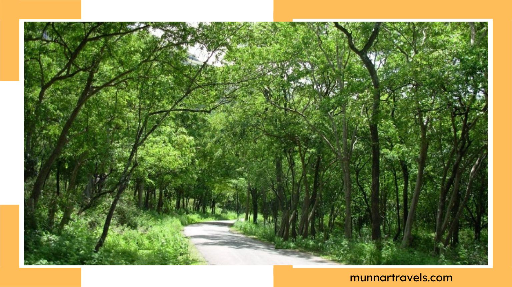

CSI CHURCH
An important landmark and one of the eminent places to see in Munnar, the CSI Church was built in 1910 as a protestant church by the Scottish tea estate workers and managers. The key features of this church are it’s awesome interiors, which include stained glass windows, brass plaques, rows of rosewood benches, and a grand chandelier.
PHOTO POINT
Sitting on the rolling grasslands of the Nilgiris Plains is the most picturesque site one has ever witnessed, named Photo Point. The vast stretches of tea gardens, the aromatic winds, and the swaying towering trees combine to offer the experience that this point has hidden. One of the beautiful places to visit in Munnar, Photo Point, is as beautiful as it can get with the blessings of Mother Nature showering on it periodically. There are also many other aromatic species of plantations that can be found in this destination near Munnar.
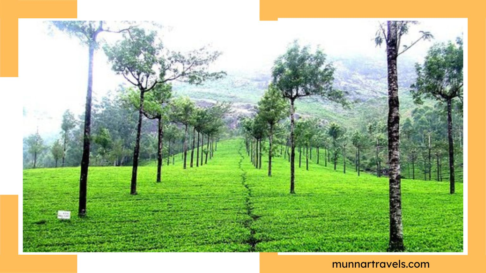
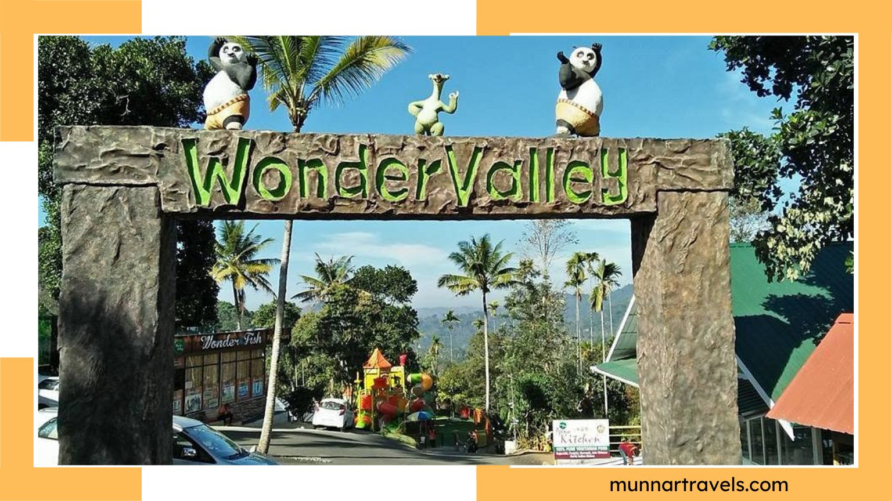
WONDER VALLEY ADVENTURE & AMUSEMENT PARK
When we say that Munnar is one of the blessed destinations when it comes to Mother Nature, we don’t lie. But what makes this destination extraordinary is that it hides something for everyone within its stash of natural bounty. One of the most action-packed places to visit in Munnar is the Wonder Valley Adventure and Amusement Park. This eco-friendly spot sits in the heart of nature and retains the natural landscape that the region adorns. It is perfect for travelers to get closer to nature as well as satisfy their thirst for adventure. From the little ones to the adults, there are several activities for one to be a part of.
ECHO POINT
Scream your name out loud at this point, and it will reverberate back within 3 seconds! Echo Point is a beautiful combination of cool, sweet breezes, green slopes, and a rejuvenating environment altogether.
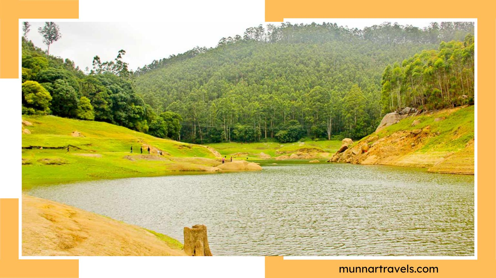
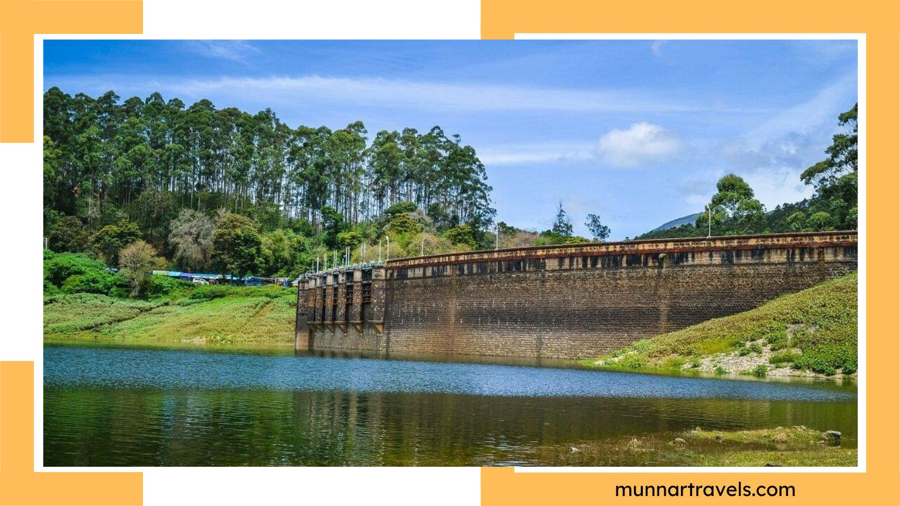
KUNDALA LAKE
Kundala Dam and Lake are among the top tourist attractions in Munnar. It offers splendid natural beauty and serenity, with magnificent views of the hills on either side of the crystal-clear water of the lake.
ATUKKAD WATERFALLS
Located between Munnar and Pallivasal in the Idukki district and accessible only via a wooden bridge, the Attakud waterfall is among the prominent places to visit in Munnar, especially in the rainy season.
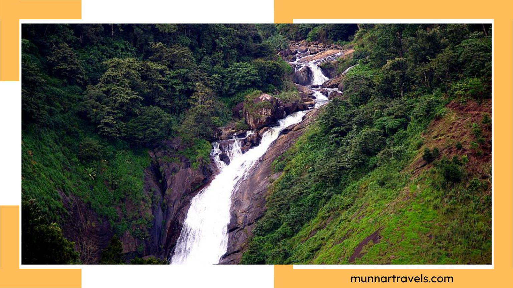
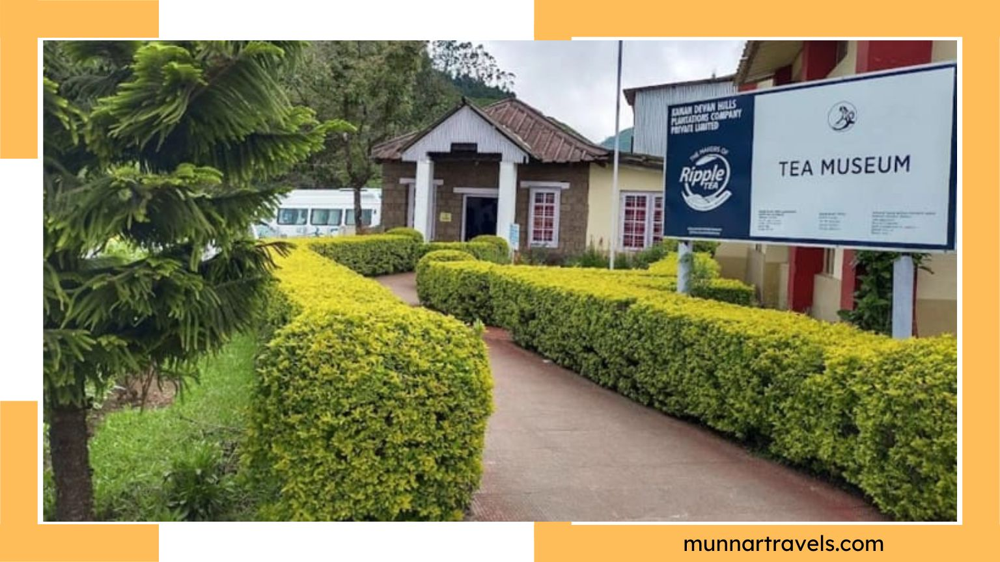
TATA TEA MUSEUM
Established by Tata Tea many years ago, the museum exclusively showcases the origin and evolution century-old tea plantations in Munnar. The museum essentially pays homage to the fact that Munnar houses some of the best tea estates in the world, and is thus among the most significant places to visit in Munnar.
DEVIKULAM
The town of Devikulam, apart from offering a breathtaking view of the Pallivasal Falls and the Sita Devi Lake, is heaven for pilgrims and temple-goers. With an assortment of temples located in the town, like the Ganesh Temple, Mariamman Temple, and Ayyanar Temple, Devikulam is among the important Munnar tourist places for worshippers.
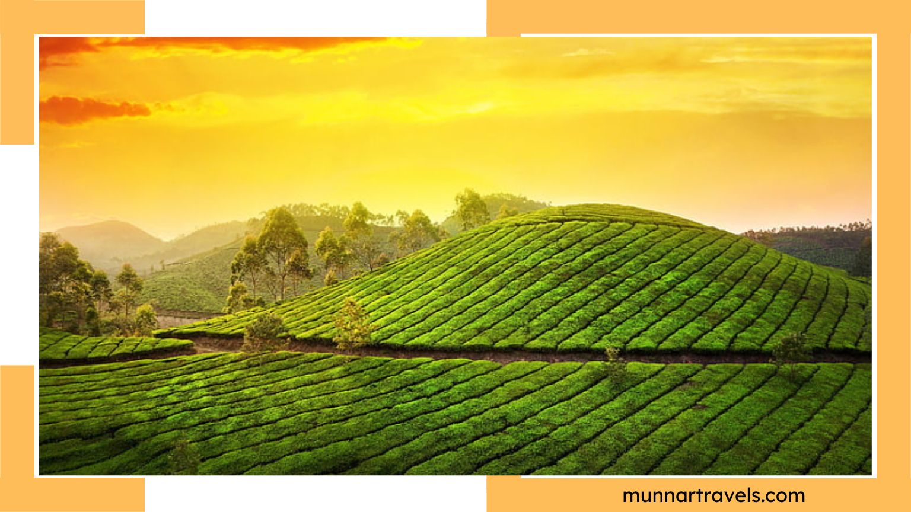